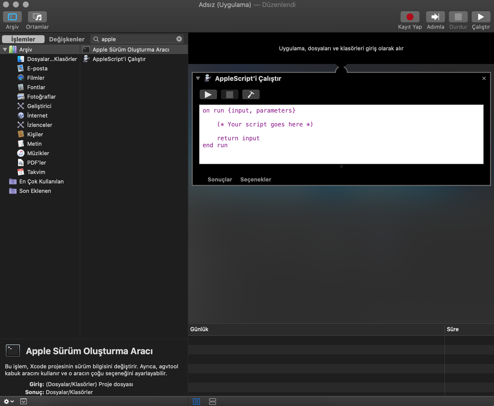
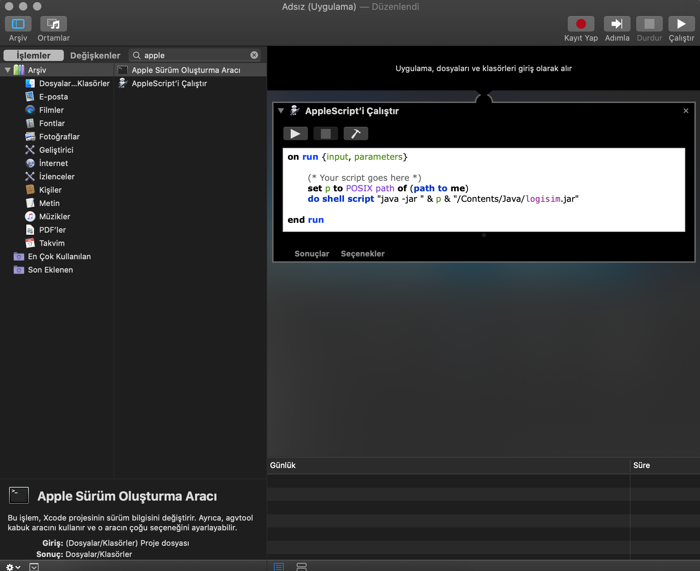
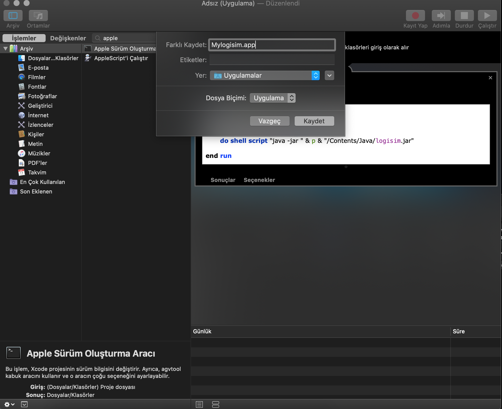
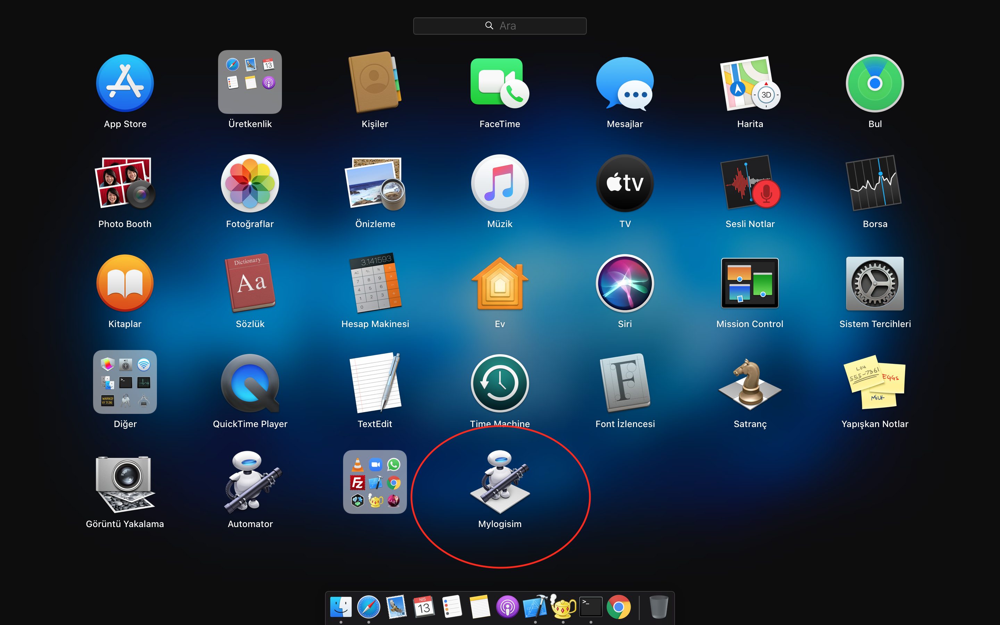

Logisim
- Logisim uygulamasına sağ tıklayıp paket içeriğini göster'e tıklayın.
- Contents/Resources klasörüne ilerleyip logisim.jar dosyasını içeren "Java" klasörünü alın. Uygulamanın geri kalanına ihtiyacınız yok.
- Logisim uygulamasını indirmediyseniz logisim.jar dosyasına buradan ulaşabilirsiniz.
Automator
-
Automator uygulasını açın.
-
Karşınıza çıkan ekrandan uygulama seçeneğini seçin.

-
Arama kısmına apple yazıp AppleScript'i Çalıştır'ı fare ile ekrana sürükleyin.
 -
Aşağıdaki kodu yapıştırın ve return input satırını silin.
set p to POSIX path of (path to me)

do shell script "java -jar " & p & "/Contents/Java/logisim.jar" -
cmd ve s tuşlarına basıp uygulamanıza isim verip kaydedin. Uzantısının .app olmasına dikkat edin
Automator'u kapatabilirsiniz.
 -
Uygulamamız klasöre kaydedildi
Son dokunuş
-
Sağ tıklayıp paket içeriğini göster'e tıklayın.
-
Contents klasörüne girip logisimden aldığınız Java klasörünü koyun.
logisim.jar dosyasını bu siteden indirdiyseniz Java isimli yeni klasör oluşturun ve logisim.jar dosyasını klasörün içine taşıyın
-
Uygulamamız kullanıma hazır.
